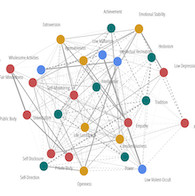
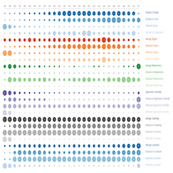

Psychological Attributes Network
Explore how personality traits are correlated with each other based on an empirical analysis be Srebrenka Letina. Nodes are personality traits and links are the correlations between them. Correlation indicates the linear association, negative (dashed) or positive (solid), that one personality trait has with another.
Financial Network Metrics
This D3.js chart is a temporal visualization of 24 attributes of a financial network. The network has banks as nodes and a link exists between two banks whenever they partecipated together in granting a loan. The temporal window is from 1984 until 2011. The size of each circle indicates the normalized value of each attribute where normalization is done with respect to the sum over all years. To see the values in numbers you can hover the mouse over the attribute in the legend.
Weapon Trade Network

Explore who buys and who sells weapons at the global level. estimates of trade flows between and within regions for one-year periods, 1955 to 2005 with five year interval. Initially the data is shown by region and if you click on a region you will see the trade flows country-by-country. Values are in US dollars.
Hi, I'am Tamer Khraisha.
I am originally from the Middle East, but I have been living in Europe for the past 12 years, and currently, I am based in Budapest, Hungary. I did my undergraduate studies in finance and economics, which constitute my primary domain of knowledge. After that, I earned a Ph.D. cum laude in
Network Science
What is Network Science?
Network science is an interdisciplinary field of research that leverages the increasing availability of
network data to investigate a wide range of complex phenomena such as collective social behavior,
technological development, financial stability, biological interactions, and many more. Network data
consists of many units known as nodes and relationships between these nodes known as links. Nodes
can be persons, organizations, URLs, or proteins. Links can represent relationships such as friendship
between persons, technological transfers between firms, hyperlinks between websites, and chemical interactions between proteins.
Network science employs an extensive array of analytical methods and data science techniques borrowed from
sociology, mathematics, physics, computer science, and economics.
from the Department of Network and Data Science at the Central European University in Budapest. During my Ph.D., I worked on the problem of collective technological innovation as well as on a variety of computational and data-driven projects.
For the past two years, I have been working as a full-time software developer and data engineer at Alphacruncher in Budapest. At Alphacruncher, I work on a variety of tasks including the automation of Extract, Transform, Load (ETL) jobs, documenting and implementing techniques for filtering errors and biases in datasets, writing complex queries for generating SQL views and data filtering, matching datasets between different sources, and developing the front-end UI for a data management application. I have worked with well-known financial datasets such as TAQ, CRSP, COMPUSTAT, IVYDB OptionMetrics, RavenPack, DealScan, and others.
As a data scientist and developer, I like to work on creating products derived from scientific analysis of data
In the medium-long run, I am interested in pursuing a career which combines scientific research with industrial applications. I have a particular interest in the topic of fraud detection and would be interested to work and do research in this field. I am also interested in research and applications related to the field of technological innovation which I explored during my PhD studies. I am open to discussing job-offers from industry and academia
I believe in the power of knowledge sharing as an important factor in solving nowadays complex problems. I share some of my articles and ideas on my blog which you can reach from the above navigation bar.